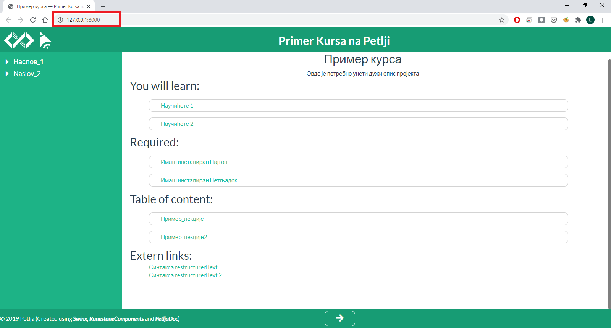

Petljadoc употреба¶
Шта је Petljadoc¶
Петљадок представља низ алата који омогућују прављење интерактивних материјала за учење какве можете видети на сајту petlja.org. Ови материјали представљају курсеве и приручнике у које је могуће укључити Пајтон код тако да се извршава у браузеру, различите вежбе, интерактивна питања, слике, видео, звучне фајлове и сл.
Петљадок у основи има Runestone Interactive и Sphinx. Runestone користи restructuredText као језик за обележавање текста (markup language) у својим изворним фајловима. Изворни фајлови ових Runestone пројеката су у .rst формату и помоћу Петљадока их претварамо у .html фајлове које браузер може да приказује.
Да бисте се упознали са синтаксом restructuredText-a препоручујемо да погледате овај линк. Овде можете наћи и синтаксни подсетник (cheatsheet) који вам може бити користан приликом рада.
Да бисте се упознали са могућностима Runestone-a и начинима како да одређене елементе (интерактивна питања, Пајтон код, слике…) укључите у свој материјал и форматирате, погледајте овај линк
Приручници¶
Примери приручника израђених на овај начин на Петљи, могу се наћи овде или овде. У изради приручника помоћу Петљадока добићете сличан изглед материјала овим материјалима.
Започињање рада на приручнику¶
Да бисте почели са радом на новом приручнику помоћу Петљадока потребно је да прво отворите нови фолдер где ће се приручник налазити. Затим је потребно да се у командној линији позиционирате у тај фолдер, што ћете најлакше урадити ако у Windows прозору тог фолдера у search bar укуцате cmd и притиснете ентер.

То ће отворити командни прозор у коме је потребно покренути команду petljadoc init-runestone која ће направити костур пројекта у изабраном фолдеру.
{kind=link}
Када покренете ову команду потребно је да подесите још неколико параметара. Можете оставити предложене вредности (у угластим заградама) тако што ћете за сваки параметар притиснути ентер без уписивања било чега. Алтернативно, можете самостално подесити вредности ових параметара. На прво питање одговорите са y како бисте наставили даље. Потребно је да онда дате име пројекту, напишете име аутора, дате наслов који ће се појављивати у пројекту, изабрати програмски језик за примере кода који ће се извршавати у браузеру и на крају одабрати HTML тему целог пројекта (овде свакако оставите предложену вредност).

Изглед пројекта¶
Пошто сте покренули petljadoc init-runestone и подесили све параметре, у фолдеру пројекта биће започет пројекат са приручником и фолдер пројекта требало би да вам изгледа као на слици испод:

У основном директоријуму налази се неколико конфигурационих фајлова (conf.py, pavement.py, conf-petljadoc.json, .gitignore) које у већини случајева није потребно мењати, а служе подешавању одређених параметара пројекта. Поред ових фајлова налази се и фолдери _templates и _static садржe елементе који ће контролисати изглед .HTML фајлова (ни њих углавном није потребно мењати).
У фолдеру _sources налазе се изворни .rst фајлови у којима се заправо пише сав садржај пројекта у restructuredText формату. У том фолдеру ће на почетку бити index.rst фајл и primer.rst. Ово су два фајла која вам могу послужити као мустра за даљи рад са приручницима.
Рад на приручницима¶
Да бисте видели како ће се у браузеру приказати оно што пишете у .rst фајловима, потребно је да отворите командни прозор и да се позиционирате у фолдер пројекта, а затим покренете команду petljadoc preview.
{kind=link}
Након неколико секунди, ово ће од ваших изворних фајлова направити .HTML фајлове који ће се налазити у новонасталом _build фолдеру. Такође ово ће отворити браузер прозор са вашим приручником. Ако је све протекло како треба, ваш командни прозор требало би овако да изгледа

У командном прозору ће се исписати build succeeded и испод тога ће писати да се садржај сервира на локалном серверу на одређеној адреси (у нашем примеру то је http://127.0.0.1:8000) и да је отворен браузер са том адресом. Истовремено, у браузеру ће садржај бити доступан управо на овој адреси.
{kind=link}
Овај командни прозор оставите отворен све време док будете радили на приручнику. Ово је важно зато што на овај начин можете пратити промене које уносите у изворне .rst фајлове одмах након што их запамтите. Дакле, када у изворни фајл унесете неке промене и запамтите их, након неколико секунди, у браузеру ћете моћи да видите како те промене изгледају у .HTML фајловима (докле год ради командни прозор у коме је покренута команда petljadoc preview). Препоручујемо да ове фајлове отварате помоћу едитора Visual Studio Code тако што ћете у фолдеру пројекта кликнути на десни клик и изабрати опцију open with code.
{kind=link}
Ово ће отворити нови Visual Studio Code прозор у коме ћете са леве стране моћи да видите све фајлове и фолдере који се налазе унутар фолдера са пројектом, а, када одаберете жељени фајл, у средини ће бити садржај тог фајла.

Јако је важно да у вашем током рада на пројекту задржите index.rst фајл који се налази у фолдеру _sources и који ће бити насловна страна вашег приручника и где се обично реферише на све остале фајлове у оквиру садржаја. Ако желите да додате нови фајл, у коме ћете, на пример, направити нову лекцију, потребно је да у фолдер _sources додате нови .rst фајл и да поново покренете petljadoc preview (или, ако вам је отворен командни прозор у коме сте раније покренули ову команду, само запамтите неки од фајлова поново и Петљадок ће сам ажурирати садржај који се приказује у браузеру).
За инструкције како модификујете саме фајлове, како да укључујете поједине елементе и међусобно повезујете фајлове, погледајте index.rst и primer.rst који се налазе у _sources фолдеру новог пројекта. Препоручујемо да покренете petljadoc preview и упоредите оно што се види у браузеру са оним што се види у .rst фајловима у оквиру _sources фолдера. Такође, можете користити и овај пројекат као мустру која вам може помоћи у раду.
Курсеви¶
Примере за курсеве можете наћи на овој страници.
Започињање рада на курсу¶
Да бисте почели са радом на новом курсу помоћу Петљадока потребно је да прво отворите нови фолдер где ће се курс налазити. Затим је потребно да се у командној линији позиционирате у тај фолдер, што ћете најлакше урадити ако у Windows прозору тог фолдера у search bar укуцате cmd и притиснете ентер.

То ће отворити командни прозор у коме је потребно покренути команду petljadoc init-course која ће направити костур пројекта у изабраном фолдеру.

Када покренете ову команду потребно је да подесите још неколико параметара. Можете оставити предложене вредности (у угластим заградама) тако што ћете за сваки параметар притиснути ентер без уписивања било чега. Алтернативно, можете самостално подесити вредности ових параметара. На прво питање одговорите са y како бисте наставили даље. Потребно је да онда дате име пројекту, напишете име аутора, дате наслов који ће се појављивати у пројекту, изабрати програмски језик за примере кода који ће се извршавати у браузеру и на крају одабрати HTML тему целог пројекта (овде свакако оставите предложену вредност).
Изглед пројекта¶
Пошто сте покренули petljadoc init-course и подесили све параметре, у фолдеру пројекта биће започет пројекат са курсом и фолдер пројекта требало би да вам изгледа као на слици испод:
{kind=link}
У основном директоријуму налази се неколико конфигурационих фајлова (conf.py, pavement.py, conf-petljadoc.json, .gitignore) које у већини случајева није потребно мењати, а служе подешавању одређених параметара пројекта. Поред ових фајлова налази се и фолдер _templates који садржи елементе који ће контролисати изглед .HTML фајлова (ни садржај овог фолдера углавном није потребно мењати).
У фолдеру _sources налази се index.yaml фајл (о њему ће бити речи касније) као и фолдери у којима су смештени изворни .rst фајлови, у којима се заправо пише садржај пројекта у restructuredText формату.
На крају, фолдер _images служи смештању слика које ће бити коришћене у оквиру материјала, а фолдер _includes служи смештању различитих типова фајлова које је потребно укључити у курс (.pdf, .py i sl.)
Рад на курсевима¶
Да бисте видели како ће се у браузеру приказати оно што пишете у .rst фајловима, потребно је да отворите командни прозор и да се позиционирате у фолдер пројекта, а затим покренете команду petljadoc preview.
{kind=link}
Након неколико секунди, ово ће од ваших изворних фајлова направити .HTML фајлове који ће се налазити у новонасталом _build фолдеру. Такође ово ће отворити браузер прозор са вашим курсем. Ако је све протекло како треба, ваш командни прозор требало би овако да изгледа

У прозору ће писати build succeeded и испод тога ће писати да се садржај сервира на локалном серверу на одређеној адреси (у нашем примеру то је http://127.0.0.1:8000) и да је отворен браузер са том адресом. Истовремено, у браузеру ће садржај бити доступан управо на овој адреси.
Након тога отвориће се у браузеру почетна страна курса која ће изгледати овако
{kind=link}
Овај командни прозор оставите отворен све време док будете радили на приручнику. Ово је важно зато што на овај начин можете пратити промене које уносите у изворне .rst фајлове одмах након што их запамтите. Дакле, када у изворни фајл унесете неке промене и запамтите их, након неколико секунди, у браузеру ћете моћи да видите како те промене изгледају у .HTML фајловима (докле год ради командни прозор у коме је покренута команда petljadoc preview). Препоручујемо да .rst фајлове отварате помоћу едитора Visual Studio Code тако што ћете у фолдеру пројекта кликнути на десни клик и изабрати опцију open with code.

Ово ће отворити нови Visual Studio Code прозор у коме ћете са леве стране моћи да видите све фајлове и фолдере који се налазе унутар фолдера са пројектом, а, када одаберете жељени фајл, у средини ће бити садржај тог фајла.
{kind=link}
Јако је важно да током рада на курсу правилно ажурирате (попуњавате и форматирате) index.yaml фајл. У овом фајлу налазе се сви релеватни подаци које Петљадок користи да би од изворних фајлова направио .html фајлове. Све нове лекције и садржаје које желите да укључите у свој пројекат морате, са једне стране убацити на одговарајуће место у структури пројекта (у одговарајућ фолдер), а са друге стране морате их укључити на одговарајућ начин укључити у index.yaml.
Ово подразумева да ОБАВЕЗНО поштујете структуру назубљивања каква постоји у овом фајлу, Такође, јако је важно да се у подаци који се наводе у index.yaml поклапају са стањем у остатку пројекта. Када отворите index.yaml он ће изгледати као на слици испод.
{kind=link}
Сада ћемо проћи кроз главне делове овог фајла и објаснити на шта је најважније обратити пажњу.
Први део index.yaml фајла представља опште податке о курсу који ће се наћи на насловној страни курса када покренете petljadoc preview. Ово је потребно попунити подацима о курсу и јако је важно да назубљивање остане са истом структуром.
Други део index.yaml фајла односи се на лекције. У њему је такође јако важно одржати исту структуру назубљивања, али такође је јако важно обратити пажњу на имена фајлова и фолдера као и на guid-e елемената. Овај део фајла почиње линијом у којо се налази lessons: (погледајте код испод или отворите index.yaml у свом пројекту).
Након тога следе лекције које су увучене са два спејса. Свака лекција почиње редом у коме се налази - title: У том реду потребно је написати назив лекције и он се МОРА ПОКЛАПАТИ са називом фолдера у који су смештени фајлови лекције унутар _sources фолдера. На нашем примеру то су фолдери Пример_лекција1 и Пример_лекција2.

Затим следи guid лекције. Он је обавезан и представља јединствени идентификатор за сваки елемент. Њега можете добити тако што ћете га генерисати овде или тако што ћете приснути F1 у Visual Studio Code-у и ту изабрати опцију insert guid која ће вам бити видљива ако сте инсталирали екстензију коју смо навели у поглављу Инсталација потребних алата. Исти guid не смете да користите више од једном иначе ћете добити грешку приликом покретања команде petljadoc preview.
Следеће поље представља опис лекције и оно је опционо. Поља title, guid, description и activities морају бити поравната.
На крају следе активности које се налазе у лекцији. Све активности морају бити увучене на начин на који је приказано у коду испод. Активности могу имати три типа reeding, video и quiz. Ако се ради о активности у којој се од ученика очекује да прочита неки текст (интерактиван или “обичан”), тип активности треба означити као reeding.
Након типа следи име ове активности у пољу title.
Испод тога налази се фајл који представља изворни фајл ове активности. То може бити .rst фајл који се налази у фолдеру лекције (субфолдер унутар фолдера _sources.) или .pdf фајл који треба да се налази унутар фолдера _static (у фолдеру пројекта). Име фајла овде мора дословно да се наведе (обратите пажњу на писмо, величину слова и на екстензију фајла).
Након тога следи опис активности који је опцион и након тога следи guid (потребно је поново генерисати нови, јединствени guid за сваку активност).
Ако је активност типа video, потребно је навести линк ка видеу и наслов видеа може бити произвољан.
Ако је активност типа quiy, потребно је навести име .rst фајла у коме се налазе питања за квиз, а који је смештен у фолдер лекције у оквиру _sources фолдера.
У лекцији нема ограничења на број активности.
Kада завршите са активностима, следи поље архивираних активности које је потребно поравнати са насловом лекције. Овде је потребно навести листу guid-a активности које су некада постојале у курсу и објављене су на петљи, а сада више не постоје. Ако таквих активности нема, слободно игноришите овај део фајла.
Када желите да пређете на следећу лекцију, пазите на поравнање и на то да сваки елемент мора имати јединствен guid. Важно је да свака нова лекција буде поравната са претходним лекцијама.
Подсетник и смернице:
Изворни фајлови (.rst) налазе се унутар потфолдера унуар фолдера
_sourcesАко желите да укључите .pdf фајл, сместие га у
_staticфолдерАко желите да укључите слике, сместите их у
_imagesфолдерОбавезно обратите пажњу на структуру
index.yamlфајлаОбавезно обратите пажњу на имена фајлова и фолдера када их наводите у
index.yamlфајлуСваки елемент
index.yamlфајла мора да има свој јединствениguidСвака нова лекција и активност коју желите да укључите у курс морају бити наведене у
index.yamlфајлу.Ослоните се на мустре које смо вам припремили како бисте видели
За инструкције како модификујете саме фајлове, како да укључујете поједине елементе и међусобно повезујете фајлове, погледајте .rst fajlove који се налазе у фолдерима лекција унутар _sources фолдера. Препоручујемо да покренете petljadoc preview и упоредите оно што се види у браузеру са оним што се види у .rst фајловима у оквиру _sources фолдера. Такође, можете користити и овај пројекат као мустру која вам може помоћи у раду.
Корисни линкови¶
Поглавље restructuredText из документације Sphinx-а
Приручник Текстуално програмирање у Пајтону, урађен у Петљадоку source code and public preview